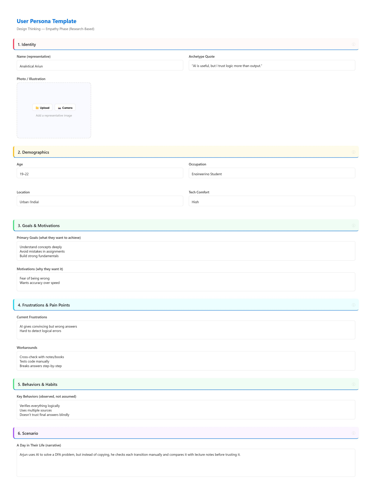
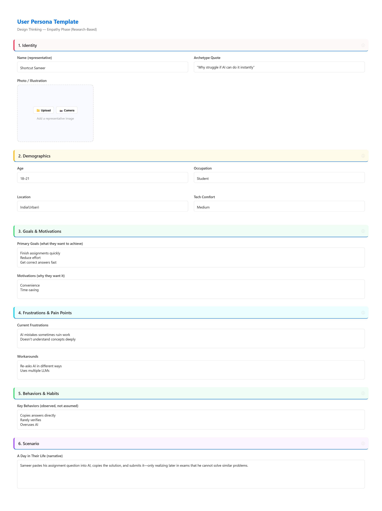
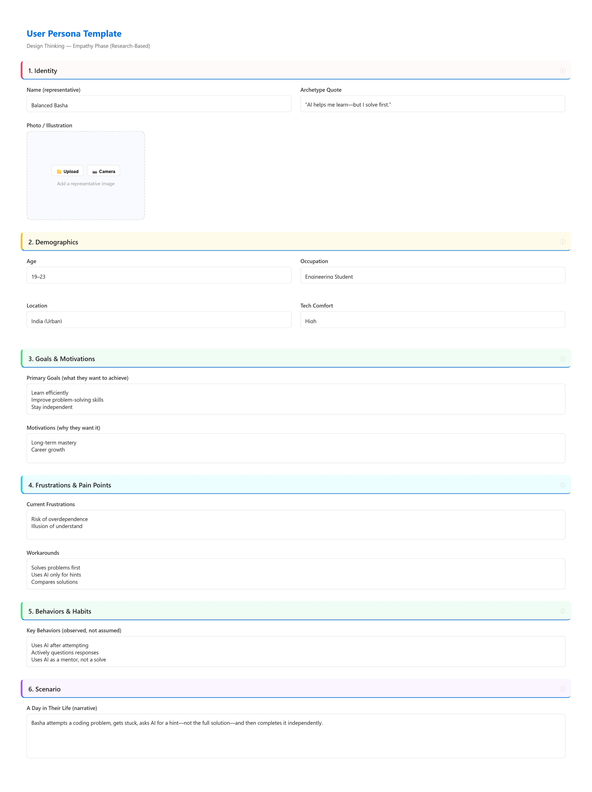

In the Design Thinking process, personas are **fictional yet data-driven archetypes** that represent the different user types within a targeted demographic.
They aren't just descriptions of people; they are tools that help us humanize data.
For **Spark Mind**, these personas represent the diverse spectrum of concerns regarding AI ethics—from technical security and academic honesty to long-term career preparation. By designing for these three individuals, we ensure our solution is robust, ethical, and practical.

The Security Auditor.
Ariun represents the technical side of the AI crisis. He is deeply concerned about where data is stored and how much of his intellectual property is being "harvested" by LLM providers.
Goal: Complete transparency and data sovereignty.

The Efficiency Seeker.
Sameer represents the "copy-paste" culture. He uses AI to finish tasks as quickly as possible, often sacrificing deep understanding for immediate results and high grades.
Goal: Rapid task completion and grade optimization.

The Ethical Learner.
Basha represents the ideal student user. He uses AI as a tutor rather than a shortcut, ensuring he understands the "why" before accepting the "what".
Goal: Deep learning and independent problem-solving.